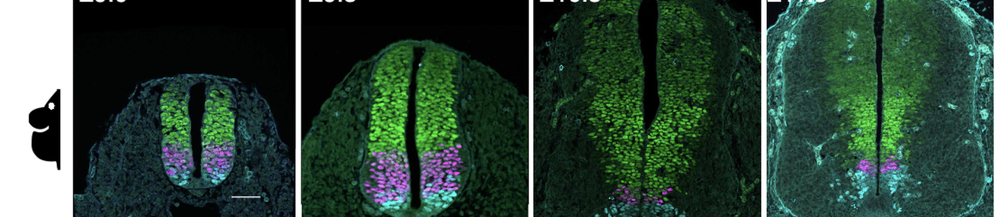
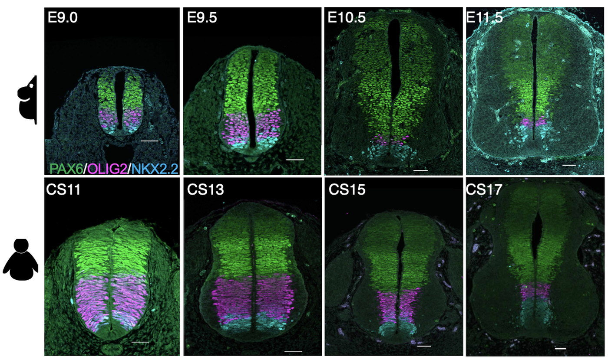
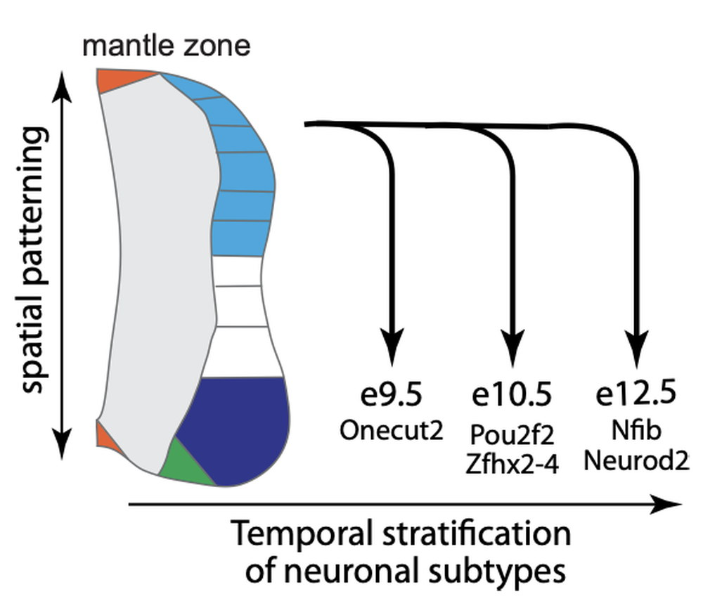
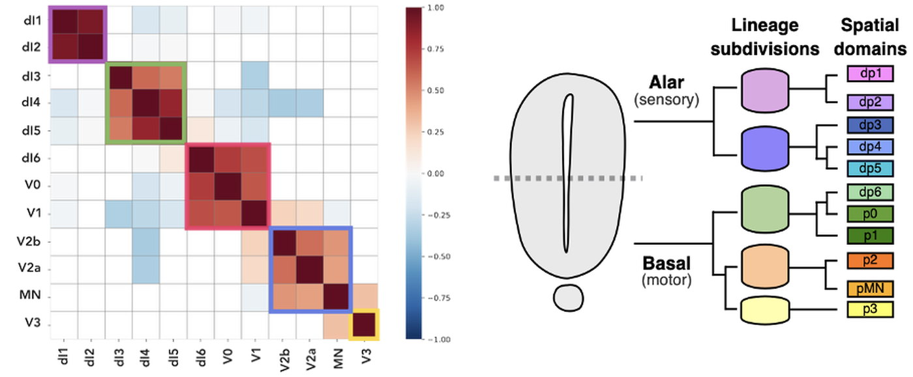

Research
Tempo, growth and lineage
Development runs to a schedule and the schedule differs between species. We study what sets the pace, how the time of neuronal generation affects cell type and how lineage determines what each progenitor can make.
Making the right cell types is not enough. They have to appear in the right order and at the right time. The same genes, in the same sequence, are expressed two to three times slower in human than in mouse. We found that differences in protein stability contribute to developmental tempo. Proteins persist longer in human cells and the whole programme slows to match, which makes pace a property of the cell rather than of any single gene. But what controls the rate of protein degradation?

The time as well as the position at which a neuron is generated influences its identity. A shared transcriptional code in neural progenitors stratifies neuronal identity by the time at which they are born. This temporal programme operates throughout the central nervous system. Onecut factors mark the earliest neurons, Pou2f2 and Zfhx factors those born in the middle, and Nfib and Neurod2 the latest. The code runs in parallel to spatial patterning, so the position a progenitor occupies and the time at which it differentiates decide which neuron it makes.

Chromatin connects the two. A global temporal programme changes which regulatory elements are accessible as development proceeds, making them available for spatial determinants. Perturbing that programme changes the order in which progenitors switch fate and alters the identity of the neurons they go on to make.
Following single progenitors reveals the cellular logic of neural tube patterning. Barcoding cells and reading their descendants in chick and human embryos shows that the neural tube first resolves into five broad lineage subdivisions, which then further split to give rise to the eleven progenitor domains. The first division separates sensory from motor regions. Individual progenitors contribute neurons to several temporal waves while remaining inside their compartment, so spatial identity persists even as temporal competence changes. The architecture is the same in chick and human and in human embryos most fate choices are settled by six weeks after conception.

Publications
Boezio GLM, Depotter JRL, Frith TJR, Radley A, Strohbuecker S, Cunha AC, Howell M, Briscoe J
Hierarchical lineage architecture of human and avian spinal cord revealed by single-cell genomic barcoding
bioRxiv (2025)
Zhang I, Boezio GLM, Cornwall-Scoones J, et al., Briscoe J, Delás MJ
The cis-regulatory logic integrating spatial and temporal patterning in the vertebrate neural tube
Developmental Cell 60:3034-3049 (2025)
Sagner A, Zhang I, Watson T, Lazaro J, Melchionda M, Briscoe J
A shared transcriptional code orchestrates temporal patterning of the central nervous system
PLoS Biology 19:e3001450 (2021)
Rayon T, Stamataki D, Perez-Carrasco R, et al., Briscoe J
Species-specific pace of development is associated with differences in protein stability
Science 369:eaba7667 (2020)
Other research areas

Gene regulation
Read more →
Stem cells and bioengineering
Read more →